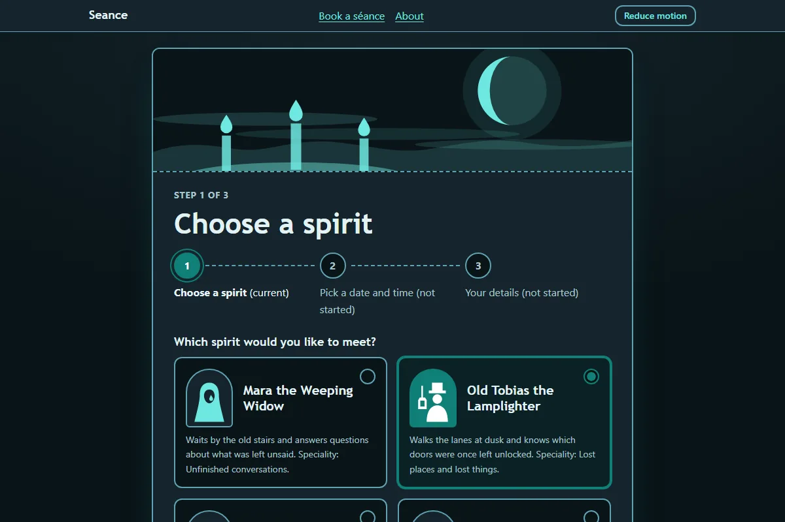
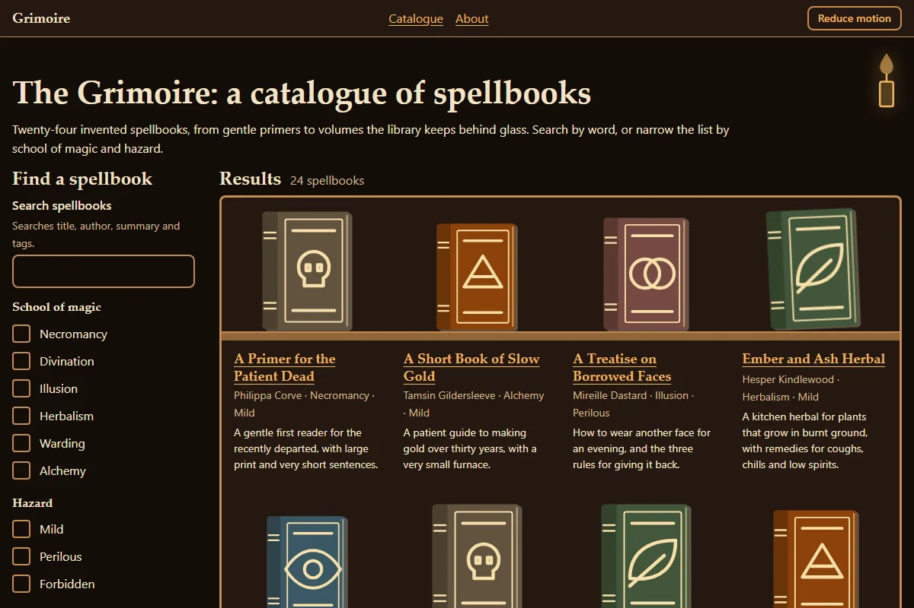

Seance
A three-step booking form for meeting a spirit, with an error summary, a confirmation dialog and an announced result.
An accessible-by-default React starter, with tools that let Kiro check a page while it runs.
0 axe violations
2 of 200 found
1 check could not run
0 axe violations
21 of 210 found
by Kiro with our tools
0 axe violations
21 of 210 found
built from the skeleton
A lit keyhole is a check that passed. We wrote the checks. They are scripted in Chromium, with no real screen reader, and the plain build and Seance got different prompts. Full results and limits
Two séance booking forms, both made with Kiro. axe reported 0 violations on each, in five states. These checks look at where focus goes, what is announced, and what can be seen or stopped. The result shown is for the plain build. After the fix, and in Seance, all 21 passed.

A three-step booking form for meeting a spirit, with an error summary, a confirmation dialog and an announced result.

A catalogue of 24 invented spellbooks to search, filter and read.
The starter both apps came from: skip link, landmarks, focus on route change, tested components, and checked contrast in light and dark.
The repo has the starter, accessibility rules and hooks for Kiro, a Trusted Tester review agent, property-based tests and a conformance-report generator.
Source code on GitHub (MIT licence)
{
"mcpServers": {
"a11y": {
"command": "npx",
"args": ["-y", "skeleton-key-a11y-mcp"]
}
}
}Then run npx playwright install chromium once. Four tools: audit_page, keyboard_walk, check_contrast and page_outline. They load a page and press Tab. They do not click or type.